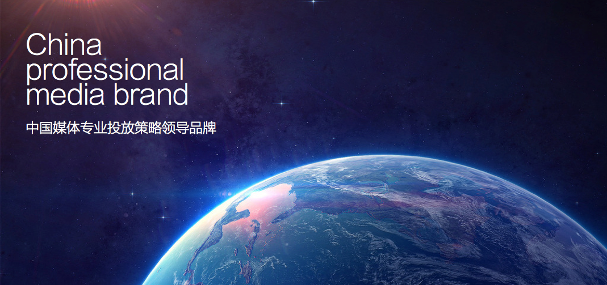
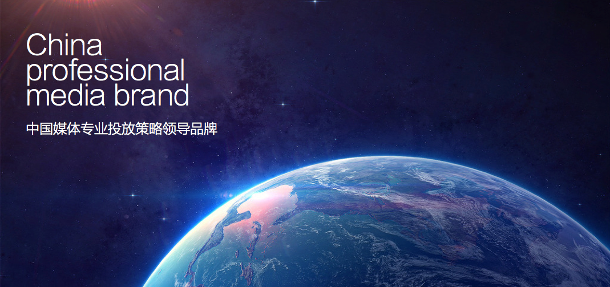

中国媒体专业投放策略领导品牌
成立于2006年的顺风传媒，是一家专注于媒体投放策略研究的媒介代理公司，生于湖南，布局全国。目前，顺风传媒已实现准集团化经营，下设3个子公司，整合媒介代理、影视制作、营销咨询业务，年营业额突破7个亿。
顺风传媒以电视媒体代理为主业，与江苏卫视、湖南卫视、浙江卫视、安徽卫视、北京卫视、天津卫视、东方卫视、辽宁卫视、深圳卫视、云南卫视等省级卫星平台有了非常深入的合作，与央视1套、央视2套、央视3套、央视4套、央视5套、央视10套都有不同程度的合作。除电视媒体外，顺风传媒还集结网络、电台、地铁等媒体，致力于打造广告投放的全媒体平台！
经过多年的积累、探索，顺风传媒的媒介专业水平、客户服务能力、媒介平台把控力达到新的高度！顺风传媒的专业水平和务实态度不仅赢得了行业高度赞誉，获得“金牌媒介策略公司”称号；更得到了客户的充分认可和信赖，连续两年荣获“广告主金伙伴奖”，其选送的案例被评选为媒体投放经典案例。顺风使命：促进中国媒介公司专业化，帮助中国企业实现媒介投放科学化。
顺风精神：锐 智 信 志
2006-2008
项目涉及湖南卫视、浙江卫视、安徽卫视、湖南经视、湖南娱乐频道、等媒体，服务娇兰佳人、以纯服饰、美肤宝、珀莱雅、加加酱油、亚华乳业、贵人鸟服饰等。
2009-2010
加深与安徽卫视、湖南卫视、江苏卫视、浙江卫视等媒体的合作；出版专业媒介刊物《风讯》，夯实顺风媒介专家的地位。与多个全国知名品牌如酒鬼酒、珀莱雅、美肤宝等深度合作，服务品牌超过30多个。
2011-2012
2011年，媒介专业水平得到客户的充分认可，已获得如腾讯、美肤宝、欧歌等上市公司的信赖，进一步提升全国上星频道代理能力。平台开拓方面，与北京卫视、天津卫视、东北卫视、辽宁卫视、深圳卫视、云南卫视等省级卫星平台都有了非常深入的合作。同时与CCTV1、 CCTV2、 CCTV3、 CCTV7、 CCTV8、 CCTV10都有不同程度的合作。
2012
2012年，公司实现准集团化运营。媒介专业水平、客户服务能力、媒介平台把控力达到新的高度，各方面合作基础将继续夯实，其中投标专业水准已得到业界广泛认可，江苏卫视招标中标及预售资源金额2.4亿元，目前已全面拿下江苏卫视幸福剧场冠名、湖南卫视金鹰独播剧场冠名、天津卫视快乐生活剧场冠名资源、央视三套综艺联盟合作伙伴，央视8套剧场特约合作伙伴。预计全年经营额将超过5亿元。
2013-2015
投资北京顺风影视、湖南顺势营销，公司向综合性传媒公司转型；历年多次荣获“金伙伴奖”、“金牌媒介”等全国性行业奖项，营业额超过5亿。投资长沙盛美广告，成为集营销咨询、广告策划、媒介代理、影视剧制作等为一体的综合性传媒公司。年底前将完成股份制改造，预计全年税前利润近4000万元，贡献财税收入超过1000万元。